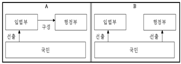
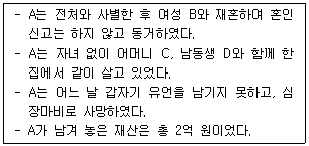
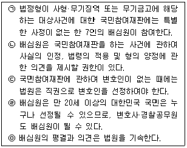
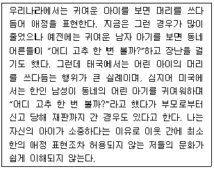
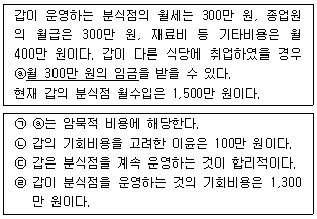
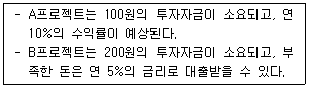
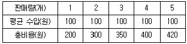
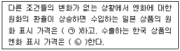

경찰공무원(순경)-사회 (2018-03-24 기출문제)
1. ｢헌법｣에서 명시한 대통령의 지위와 권한에 대한 내용으로 가장 적절하지 않은 것은?
- 행정권은 대통령을 수반으로 하는 정부에 속한다.
- 대통령은 필요하다고 인정할 때에는 외교·국방·통일 기타 국가안위에 관한 중요 정책을 국민투표에 붙일 수 있다.
- 대통령은 법률에서 구체적으로 범위를 정하여 위임받은 사항과 법률을 집행하기 위하여 필요한 사항에 관하여 대통령령을 발할 수 있다.
- 국가원로자문회의의 의장은 대통령이 된다. 다만, 대통령이 없을 때에는 국무총리가 지명한다.
(정답률: 알수없음)

2. 다음 그림은 전형적인 두 가지 정부 형태인 A, B를 나타낸 것이다. A와 B의 일반적인 특징에 대한 설명으로 가장 적절하지 않은 것은?

- A의 정부 형태는 입법부와 행정부가 하나로 융합된 일원적 정부 형태이다.
- A의 정부 형태에서 의원은 각료를 겸직할 수 있다.
- B의 정부 형태에서 행정부 수반은 의회를 해산하여 다수파의 횡포를 견제할 수 있다.
- B의 정부 형태에서 행정부 수반은 법률안 거부권을 갖는다.
(정답률: 알수없음)
3. 행정심판에 대한 설명으로 가장 적절하지 않은 것은?
- ｢행정심판법｣은 행정심판 절차를 통하여 행정청의 위법 또는 부당한 처분(處分)이나 부작위(不作爲)로 침해된 국민의 권리 또는 이익을 구제하고, 아울러 행정의 적정한 운영을 꾀함을 목적으로 한다.
- 행정심판 절차는 행정소송 절차보다 시간과 비용이 증가된다.
- 행정청의 처분 또는 부작위에 대하여는 다른 법률에 특별한 규정이 있는 경우 외에는 ｢행정심판법｣에 따라 행정심판을 청구할 수 있다.
- 광역시장·도지사의 처분 또는 부작위에 대한 심판청구에 대하여는 ｢부패방지 및 국민권익위원회의 설치와 운영에 관한 법률｣에 따른 국민권익위원회에 두는 중앙행정심판위원회에서 심리·재결한다.
(정답률: 알수없음)
4. 형사보상제도에 대한 내용으로 가장 적절하지 않은 것은?
- ｢형사소송법｣에 따른 일반 절차 또는 재심(再審)이나 비상상고(非常上告) 절차에서 무죄재판을 받아 확정된 사건의 피고인이 미결구금(未決拘禁)을 당하였을 때에는 ｢형사보상 및 명예회복에 관한 법률｣에 따라 국가에 대하여 그 구금에 대한 보상을 청구할 수 있다.
- 보상청구는 무죄재판이 확정된 사실을 안 날부터 1년, 무죄재판이 확정된 때부터 3년 이내에 하여야 한다.
- 피의자로서 구금되었던 자 중 불기소처분을 받은 자가 형사보상을 청구하는 경우에는 검사로부터 불기소처분의 고지 또는 통지를 받은 날로부터 3년 이내에 하여야 한다.
- 형사피의자 또는 형사피고인으로서 구금되었던 자가 법률이 정하는 불기소처분을 받거나 무죄판결을 받은 때에는 법률이 정하는 바에 의하여 국가에 정당한 보상을 청구할 수 있다.
(정답률: 알수없음)
5. ｢민법｣이 규정한 유언에 대한 내용으로 가장 적절하지 않은 것은?
- 유언의 방식은 자필증서, 녹음, 공정증서, 비밀증서와 구수증서의 5종으로 한다.
- 녹음에 의한 유언은 유언자가 유언의 취지, 그 성명과 연월일을 구술하고 이에 참여한 증인이 유언의 정확함과 그 성명을 구술하여야 한다.
- 유언으로 이익을 받을 사람, 그 배우자와 직계혈족도 유언의 증인이 될 수 있다.
- 만 17세에 달하지 못한 자는 유언을 하지 못한다.
(정답률: 알수없음)
6. 다음 사례의 경우 A 재산의 상속에 대한 설명 중 가장 적절한 것은?

- B가 단독 상속하며, 상속액은 2억 원 전액이다.
- C가 단독 상속하며, 상속액은 2억 원 전액이다..
- B, C, D가 공동으로 균등 분할하여 상속한다.
- C, D가 공동으로 상속하며, 상속액은 각 1억 원이다.
(정답률: 알수없음)
7. ｢국민의 형사재판 참여에 관한 법률｣상 국민참여재판에 대한 내용 중 옳은 것을 고른 것은?

- ㉠, ㉡
- ㉢, ㉣
- ㉡, ㉤
- ㉡, ㉢
(정답률: 알수없음)
8. 사회·문화 현상을 보는 관점인 갈등론과 기능론에 대한 설명으로 가장 적절한 것은?
- 갈등론: 사회를 이루는 구성 요소들은 상호 연관되어 있으며 사회의 존속과 통합에 필요한 기능을 적절히 수행함으로서 사회 전체의 유지와 발전에 기여한다.
- 기능론: 사회를 하나의 통합된 기능적 체계로 보며, 살아 있는 생물 유기체에 비유한다.
- 갈등론: 사회 안정과 합의를 지나치게 강조함으로써 사회 갈등 현상을 간과하고, 사회 변화를 부정적으로 보기 때문에 기존의 질서나 권력 관계의 유지에 기여하는 보수적 관점이라는 비판을 받기도 한다.
- 기능론: 사회에는 돈, 권력, 명예, 지위 등과 같은 희소가치를 획득한 지배 집단과 그렇지 못한 피지배 집단이 존재하는데 이들 간의 갈등은 자연스러운 현상이라고 설명한다.
(정답률: 알수없음)
9. 다음 글에 나타난 문화 이해 태도로 가장 적절한 것은?

- 문화 사대주의
- 문화 상대주의
- 극단적 문화 상대주의
- 자문화 중심주의
(정답률: 알수없음)
10. 사회실재론에 대한 설명으로 가장 적절한 것은?
- 사회를 개인의 단순한 합 이상이라고 보며, 구성원 개개인의 특성만으로는 설명할 수 없는 하나의 독립적 실체라고 보는 관점이다.
- 사회는 독립적인 실체로 존재하는 것이 아니라 개인들의 집합체에 붙여진 이름에 불과하며, 개인만이 실재한다고 보는 관점이다.
- 근대 시민 혁명의 사상적 배경이 되었던 사회계약설과 관련이 깊다.
- 개인을 사회를 구성하고 변화시키는 능동적인 존재로서 인정하고 있지만 사회가 개인에게 미치는 영향을 설명하지 못하는 한계가 있다.
(정답률: 알수없음)
11. 사회병리론에 대한 설명으로 가장 적절한 것은?
- 사회변동으로 인해 기존 사회조직이 해체되면서 사회통제장치들이 기능을 상실한 상태를 사회문화로 인식한 이론이다.
- 사회문제의 원인을 사회화의 실패에서 찾는 이론이다.
- 사회적 목표와 그 목표를 달성하기 위한 합법적 수단 사이의 불일치 상태에서 가치관의 혼란으로 사회문제가 발생한다는 이론이다.
- 산업화의 진행에 따라 분업이 보편화되고, 친밀감과 연대를 약화시켜 무규범상태가 발생한다는 이론이다.
(정답률: 알수없음)
12. 문화의 속성에 대한 설명으로 가장 적절한 것은?
- 공유성: 문화는 언어·문자 등을 통해 한 세대에서 다음 세대로 축적·계승된다.
- 총체성: 문화의 각 요소들은 상호 유기적 관계를 맺고 전체적으로 통합성을 가진다.
- 학습성: 문화는 선천적으로 물려받지만 성장을 통해서도 학습된다.
- 특수성: 모든 사회나 시대의 문화에서 공통적으로 나타나는 특성이다.
(정답률: 알수없음)
13. 로스토(W. Rostow)의 단계적 경제 발전 과정 중 제4단계(성숙 단계)에 대한 설명으로 가장 적절한 것은?
- 국가와 국민들이 경제 발전의 필요성을 인식하는 단계이다.
- 공업화가 진행되면서 농업 기술의 혁신을 가져와 농업이 상업화된다.
- 기술 혁신으로 새로운 형태의 공업이 일어나고 국제 경제에서 안정된 위치를 확보한다.
- 소비재 산업과 서비스 산업이 경제의 주축이 되는 단계이다.
(정답률: 알수없음)
14. 다음 글에 대한 보기의 설명 중 옳은 것을 고른 것은? (단, 기회비용은 명시적 비용과 암묵적 비용의 합이다.)

- ㉠, ㉡, ㉢
- ㉠, ㉡, ㉣
- ㉠, ㉢, ㉣
- ㉡, ㉢, ㉣
(정답률: 알수없음)
15. 100원을 가진 갑은 다음 A, B프로젝트 중 B프로젝트에 투자하기로 하였다. 갑의 선택이 합리적이기 위한 B프로젝트 연간 예상수익률의 최저 수준으로 가장 적절한 것은? (단, 각 프로젝트 기간은 1년이다. 예상수익률=예상수익÷투자자금)

- 5.6%
- 6.1%
- 6.6%
- 7.6%
(정답률: 알수없음)
16. 다음 표는 한 기업의 X재 판매량에 따른 평균 수입과 총비용을 나타낸다. 이에 대한 분석으로 가장 적절한 것은?

- 총이윤(손실)은 판매량이 2개일 경우와 3개일 경우에 같다.
- 판매량이 증가하여도 기업의 총수입은 일정하다.
- 판매량이 1개씩 증가할 때마다 추가적으로 발생하는 비용은 증가한다.
- 판매량이 5개일 경우 총이윤은 80원이다.
(정답률: 알수없음)
17. 국제 수지에 대한 설명으로 가장 적절한 것은?
- 경상 수지는 주로 상품과 서비스의 거래를 나타내는데, 상품 수지와 서비스 수지, 본원 소득 수지, 이전 소득 수지의 합을 의미한다.
- 국제 수지표는 그 거래의 내용을 자산수지와 국제·금융 계정으로 구분하여 기록한다.
- 이전 소득 수지는 임금이나 투자로 발생하는 소득과 관련된 외화의 수취와 지급의 차이를 보여 준다.
- 본원 소득 수지는 아무런 대가 없이 주고받는 외화의 수취와 지급의 차이를 보여 준다.
(정답률: 알수없음)
18. 보기에서 ㉠, ㉡에 들어갈 가장 적절한 말은?

- ㉠하락, ㉡하락
- ㉠하락, ㉡상승
- ㉠상승, ㉡하락
- ㉠상승, ㉡상승
(정답률: 알수없음)
19. 경상 수지 흑자에 의해 발생하는 일반적인 현상으로 가장 적절한 것은?
- 국민소득 증가
- 국내 실업 증가
- 국내 통화량 감소
- 외국인 투자 감소
(정답률: 알수없음)
20. 인플레이션에 대한 일반적인 설명으로 가장 적절한 것은?
- 비용 인상 인플레이션은 총수요의 증가로 인하여 물가가 올라가는 현상이다.
- 인플레이션은 총수요의 감소와 과도한 통화 긴축으로 물가가 지속적으로 하락하는 현상이다.
- 비용 인상 인플레이션이 발생되면 실질 GDP가 감소한다.
- 인플레이션은 경기 침체(불황)에도 불구하고 물가가 오히려 오르는 현상이다.
(정답률: 알수없음)
국가원로자문회의의 의장은 대통령이 되는 것은 맞지만, 이는 대통령의 권한이나 역할과는 직접적인 연관이 없다. 대통령이 없을 때 국무총리가 지명하는 것은 대통령 대신 국가원로자문회의를 주재하는 인물을 지명하는 것으로, 대통령의 권한이나 역할을 대신하는 것이 아니다.
따라서, 이 보기는 대통령의 지위와 권한에 대한 내용으로 적절하지 않다.